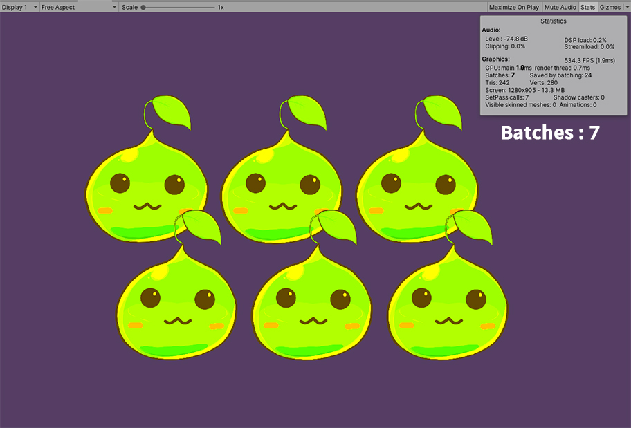

AnyPortrait > Manual > Reduce Draw Calls
Reduce Draw Calls
1.3.5
One of the most effective ways to optimize your game's performance is to reduce Draw calls.
Draw calls are the number of times objects or other elements are rendered.
Shortly, the more objects is located, the more draw calls will be.
However, depending on the rendering settings and the properties of the material, draw calls may decreases than the actual number of objects.
We recommend you to refer the Unity, Community, and Forum articles on how to reduce draw calls.
This page contains scripts to compare AnyPortrait's ability to reduce draw calls.
It also describes settings that increase draw calls in certain situations.
If you're using a script, see the Related page.
Note that.
In Unity, the draw call count is indicated as Batch Count.
Although the two concepts have some processing differences, they are usually about the same value, and two words are often treated as the same.
Please note that these two words are also used as the same words on this page.
How AnyPortrait manages Draw Calls
AnyPortrait's systems offer a variety of features and optimization techniques to reduce draw calls.
1. The cases that the draw call is optimized or not increase
- Draw calls are optimized when the character's meshes are rendered with the same textures and materials.
- Draw calls are reduced when multiple characters are placed in the scene that share a common texture and material.
- Draw calls do not increase even if the character's scale is negative.
- In script functions that change the color or texture of a mesh, if the target is "Image", the draw call is prevented from increasing within the character. However, sharing draw calls with "other characters" will be turned off.
2. The cases that the draw call increases
- Draw calls will increase if meshes have different textures or different materials.
- Draw calls increase if color animation is applied or if you randomly change the color of a particular mesh with a script function.
- Draw calls may increase depending on depth from camera. (Draw calls are reduced only when meshes of the same material are placed in succession.)
- When the clipping mesh is rendered draw calls increases, because is uses the Render Texture.
- If you use a property other than the Shader property used by AnyPortrait, draw calls will increase.
AnyPortait has three draw call optimization steps.
1. Multiple characters are rendered with the minimum draw call
- It is that draw calls are the most optimized stage, and characters sharing the same material are rendered in the same draw call
2. Meshes of a single character are rendered with the minimum draw call
- Draw calls are optimized within a single character. Draw calls are not shared with other characters, but draw calls can be reduced a lot at this stage.
3. A mesh that does not share draw calls exists
- Draw calls increase because some of the meshes of a single character are rendered in the different draw call.
Settings to optimize Draw Calls
The simplest way to check draw calls in Unity is as above.
(1) Select Game screen.
(2) Press the Stats button.
(3) The value of the Batches is the number of draw calls.
The scene above shows a scene where only one character is placed, and the draw call is 6.
There is no Draw call Batching, so all elements are being rendered on each draw call.
Open the Player Settings.
- Open "Edit > Project Settings" in the Unity menu and select the "Player", or
- Select Player Settings from "File > Build Settings" in the Unity menu.
If Dynamic Batching is disabled among the items in Other Settings, draw calls are not optimized.
Turn on Dynamic Batching.

When you run the game, draw calls are reduced from 6 to 2.
(Draw calls are the sum by one background and one character with optimized meshes.)
Settings in the Universal Render Pipeline
Dynamic Batching option does not appear when using Scriptable Render Pipeline such as Universal Render Pipeline (URP).
This is because SRP Batcher, which optimizes better than Dynamic Batching, is automatically turned on.
In other words, using URP eliminates the need to enable the Dynamic Batching option above.
SRP Batcher can be found in Unity's documentation. (LINK)
The SRP Batcher option is hidden by default, so if you want to check it, refer to the explanation below.
(URP is set first, and there may be differences depending on the Unity version.)

(1) Open Edit > Preferences... of the Unity Editor menu and select the Core Render Pipeline menu.
(2) Change the value of Visibility of Additional Properties to All Visible.
(1) Select the currently applied URP Asset.
(2) You can see SRP Batcher and Dynamic Batching options.
If SRP Batcher is turned on, rendering is already optimized, so you do not need to turn on Dynamic Batching.
Comparison of Draw Call changes according to how to set the mesh color
When changing the color of the mesh, the draw calls depend on which method you use.
This is related to AnyPortrait's draw call management.
See the example below to optimize.

The color of a mesh has been changed by a modifier or the "SetMeshColor(string transformName, Color color2X)" function.
In this case, this optimization phase is "lowest stages" that the draw calls are not shared with each meshes.
Draw calls increase to 4 because the color-changed mesh is rendered in separate the draw call.
Using the color animation is a comfortable way to do this, but watch out for increased draw calls.
If the mesh's color returns to the default value as (0.5, 0.5, 0.5, 1.0), draw calls are reduced,
and you can also optimize draw calls by using a function that restores the material settings,
such as "ResetMeshMaterialToBatch(string transformName)".
Let's see what happens if the colors of the all meshes are changed in a batch.
Script functions that changes all the colors of meshes will mainly use two things:
- SetMeshColorAll(Color color2X) : Changes the colors of all meshes regardless of material.
- SetMeshColorAll(string optTextureName, Color color2X) : Changes the colors of the meshes, which are use the common texture, which is the argument.
These functions look almost identical, but there are differences in draw calls depending on how they are handled.

This is the result of using the SetMeshColorAll(Color color2X) function.
This function is same that the "SetMeshColor" function is applied to all meshes in bulk.
Since the SetMeshColor function is a function of the "lowest optimization phase", the mesh no longer shares the material, regardless of color.
Therefore, the value the draw call is 6.

This is the result of using SetMeshColorAll(string optTextureName, Color color2X) function.
Since we have given the name of the image as an argument, this function does not target "mesh", but "image".
Since this function directly change the color of material shared by meshes, all meshes continue to share the same material.
Therefore, this function performs "Draw call optimization in single character" as "intermediate optimization phase".
As a result, the draw calls will remain at the optimized value of 2.
1.3.5
As of AnyPortrait v1.3.5, improvements have been made to keep draw calls optimized even with batch change functions such as SetMeshColorAll(Color color2X).
Comparison of Draw Call when multiple characters are placed
Draw calls increase when multiple characters are placed.
When various kinds of objects are placed, the draw calls generally increase by the number of objects.
However, if only characters made with AnyPortrait are placed, the draw calls are greatly reduced if those characters share the same texture and material.
(If conditions are met, the original character does not necessarily need to be duplicated for optimization.)
In the above case, six characters are placed in the scene.
However, with AnyPortrait's "highest optimization phase", you can see that the draw calls are reduced significantly to 2.
If you do not change the color, use the default material properties and use the common texture, the characters created by AnyPortrait recognize each other and optimize draw calls without any extra work.
The screen above shows that one of the six characters is selected and the function SetMeshColorAll(string optTextureName, Color color2X) is applied.
As this function was used earlier, the "intermediate optimization phase", this character no longer shares the material with other characters.
Therefore, the draw calls increase from 2 to 12.
Of course, this value is pretty much less than expected maximum draw call of 31, which is the sum of the total number of meshes(30) and one background(1).
However, it seems to have increased significantly compared to the most optimized value of 2.
This result is due to the "continuous rendering order", one of the conditions under which draw calls are batched and reduced.
See additional explanation below.

Let's see how the characters are placed in the current scene.
The characters above are a bit behind, and characters in the same row have the same Z position.
Since the color has the same Z position as the changed character, the rendering order of the meshes of the different materials is mixed.
As a result, there are many situations where materials are switched while rendering is performed sequentially.
This situation does not effectively reduce draw calls even if several groups of objects share material.
Let's see how the draw calls change by changing the Z position of the characters.
For simplicity, we tried to make sure that the Z positions are not equal but placed back and forth sequentially.
When rendering sequentially according to the Z position, this method prevents the rendering order of the "color-changed characters" meshes and the rendering order of other meshes from being mixed.
The number of draw calls has been greatly reduced from 12 to 4 again.
If you know this principle, you can do a little more optimization.

This time, the "color-changed character" is placed first.
The draw calls are now 3, which is the minimum expected value, because other characters are intentionally placed so that they can be bundled and rendered at once.
This is the most optimized state, but in practice it is difficult to reposition objects to reduce draw calls in the game.
Instead, we recommend organizing your scene in such a way that draw calls are likely to be reduced.

What happens if you apply SetMeshColorAll(string optTextureName, Color color2X) to all characters?
Since this function is a "intermidiate optimization phase", once called, "Draw call optimization is a single character" is retained, but "Draw call optimization with other characters" is no longer performed.
Regardless of the color, the draw calls increase slightly to 7.
A value of 7 means that the Z positions of the characters are properly distributed (background 1 + character 6),
as explained above, if the Z positions are the same and the rendering order overlaps, the worst case draw call may not be optimized.

The screen above shows the characters are placed in the same Z position with other same conditions.
There are no draw call optimizations, reaching 31, which is a maximum.
Draw calls are internal calculation of the Unity engine, so there are many other causes of increase and decrease in addition to the Z position.
Try other ways to optimize drawcalls.
Cases that can increase draw calls
There are many conditions under which draw calls can be increased.
Below we introduce some features of AnyPortrait that increase the draw calls other than the above functions or color modifiers.
If multiple images are used for one character, the draw calls will increase.
It may be effective to use one large image rather than several smaller ones.
(Please check in advance since it may vary depending on the build environment and devices.)

Clipping meshes use the Render Texture technique.
Due to the feature of the render texture technique, the clipping meshes does not share draw calls with other meshes.
Draw calls are increased for both clipping mask meshes and meshes being clipped.

If you set the mesh's Shader Settings to something other than the default, this mesh will not be able to share the material with other meshes.
This mesh is changed to be the "lowest optimization phase".
This is the case if you set the Blend method to a value other than Alpha Blend, or use a Material Set that is different from the default.
Using the custom properties of the material using script functions (such as the SetMeshCustomFloatAll function) or the Add Custom Property function on this screen also causes an increase in draw calls.

If you check in the game, you can see that the draw calls are increased by some meshes.
Reducing Draw Calls using the Sorting Group
Despite the above explanation, draw calls often increase.
In particular, it is difficult to reduce draw calls when many different characters or objects are placed.
If a large number of objects composed of Mesh Renderers appear like AnyPortrait, the draw call can increase significantly.
At this time, draw calls can be effectively reduced by using Sorting Group. (related page)
In particular, this time, we will use Unity's Frame Debugger to examine the rendering process in detail.
This is a scene where two types of characters are placed.
Both characters were created with AnyPortrait.

At the start of the game, a simple script was written that duplicated 10 more of the two characters.
This script makes the duplicated characters positioned within a range.

Let's run the game.
(1) The characters are duplicated while the script is running.
(2) Draw call appeared as 27.
Since it is duplicated to a random location, the result is slightly different each time the game is launched,
It is very regrettable that as the character increases, the draw call is also increased almost in proportion.
The duplicated characters are of the same material as the original, so it is good to share draw calls if possible.
Let's run the frame debugger and check the rendering history.
Run Window > Analysis > Frame Debugger.
(1) Run the game and (2) click the Enable button.
(3) It shows how the rendering has progressed in the current frame.

Since you need to check the mesh with translucent material, check "Drawing > Render.TransparentGeometry > RenderForwardAlpha.Render > RenderForward.RenderLoopJob".
(1) The order in which the meshes were rendered appears. Draw Dynamic means that several meshes are rendered together in one draw call, so it is somewhat optimized.
The problem is that respective meshes are rendered one by one as shown in (2).
If you see the above result, it means that meshes with different materials were rendered in order during the rendering process.
This is especially the case with AnyPortrait characters that consist of multiple meshes.
While each of the meshes is being rendered, the meshes of other characters with similar Z values are mixed and rendered.
If you use Sorting Group, you can prevent "rendering mixed with other character's meshes" as above.

(1) Select each AnyPortrait character.
(2) Change the value of "Sorting Order Option" to "Depth To Order".
(3) Add the "Sorting Group" component.
(You can also add the Sorting Group component to the AnyPortrait character's parent GameObject.)

Run the game again and click the Enable button of the frame debugger to check the result.
(1) You can see that all rendering steps are shown as Draw Dynamic.
Also, you can see that the draw call is greatly reduced because the rendering is performed in units of Sorting Group.
Draw calls have been reduced considerably, and the current optimization results are in good status for general game projects.
However, it would be nice if we could reduce draw calls a little more here.
This is because the current step is "Rendering per Character", but the most optimized step is "Rendering per Material".
This optimization strategy can be difficult depending on the game, but it would be a good idea to give it a try if possible.

This method has the point that meshes with the same material can have the same draw call if they have their own rendering order for each character of the same type.
(1) Select one of the two characters. In this example, the "Slime" character is selected.
(2) In Sorting Group, change the value of (3) Order in Layer to "1" instead of the default value of 0.
If more characters are added, set each character type to have a different Sorting Order.

(1) When you run the game and check the results in the frame debugger, you can see that draw calls have occurred as many as character type, not the number of characters.
(2) When the background is included, only draw call count of "3" occurred.
In this method, there is a problem that the rendering order is fixed depending on the character type.
(In the image above, all Slimes are in front of all Dragons.)
However, if the rendering order is not important, and if there are a lot of characters, it is a good idea to try this optimization strategy.